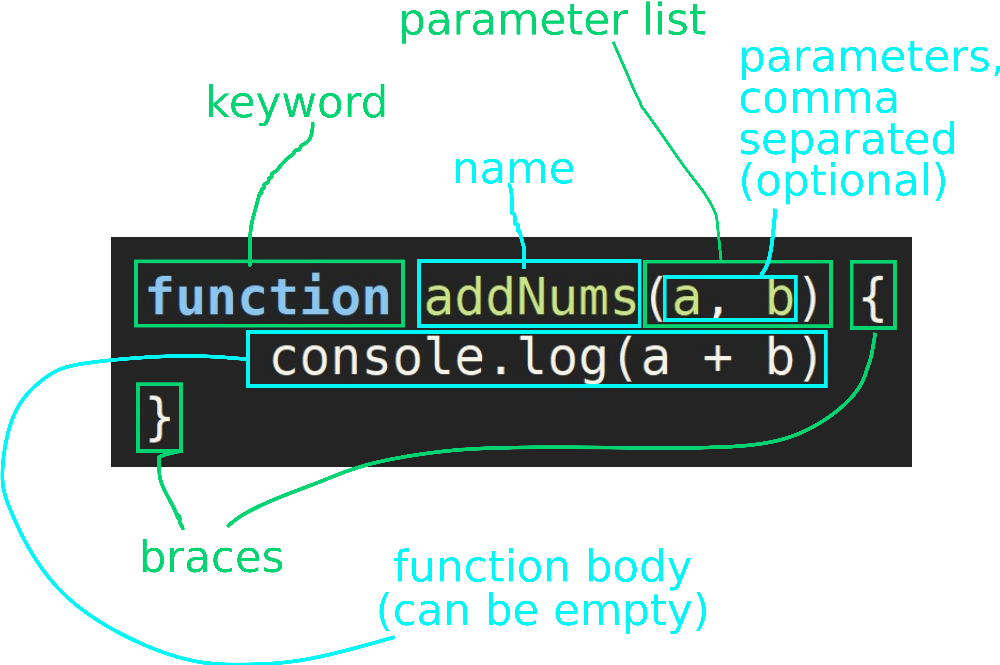
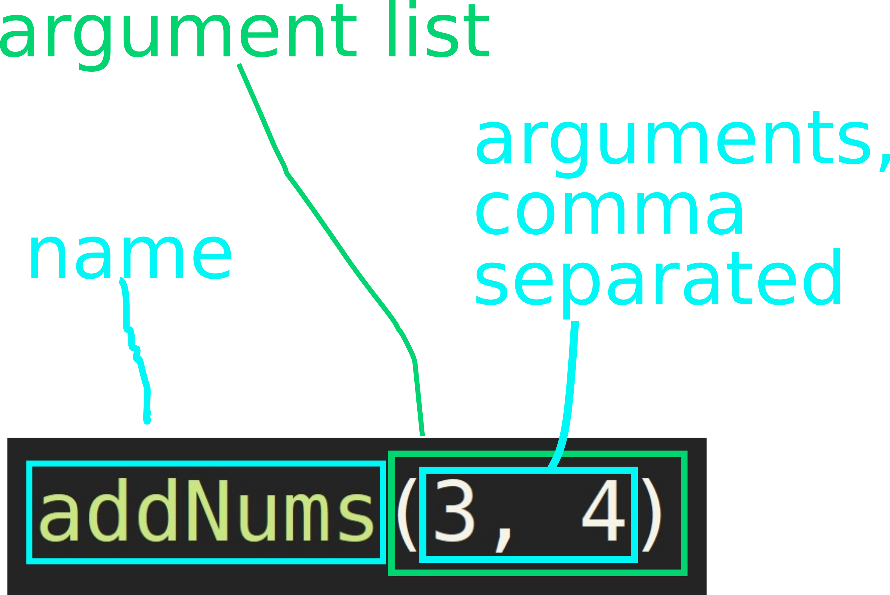
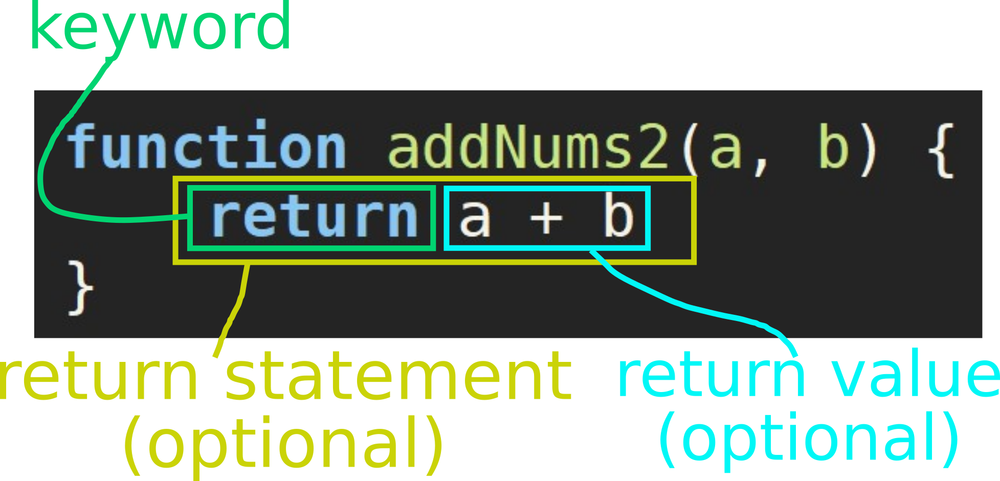

-
Notes on notation
Notes on notation
Instructions starting with ACTION:, like the one below, are for the student to carry out while reading the tutorial.
ACTION: Open your browser.
-
What is a function?
What is a function?
In programming, a function is a reusable piece of functionality.
There are two stages to using a function:
- First, the function must be defined. By this we mean the specification of what the function does.
- Once defined, the function can be called. By this we mean the invocation of the function i.e. getting the function to do whatever it does.
In Javascript, there is no difference as to where function definitions and calls appear in the script content. However, a particular function can be called only after it is defined.
-
Defining a function
Defining a function
To define a function we must provide:
- a name - must follow Javascript identifier definition rules
- a parameter list - this may be empty
- a function body - this may also be empty
Javascript function definition syntax  -
Calling a function
Calling a function
A function
- can be called only if it has been defined
- is called using
- the function name
- arguments, which are values given to the function parameters for that instance of the function call
Javascript function call syntax ACTION:
- Create an HTML file with the content given below.
- Open the file in a browser.
- Open developer tools (F12 or Ctrl-Shift-i, tab Console).
- Now reload the page (F5 or Ctrl-Shift-r).
- Notice that nothing happened in the console even though the function addNums has been defined in the HTML file. Why?
Because the function has not been called. It has been defined only.
- Because the function has been defined, the Javascript interpreter in the browser has access to it and can run it if we call it. Call the function from the console by typing in the following addNums(3, 4), then pressing Enter.
<!doctype html> <html lang="en"> <head> <meta charset="UTF-8"/> <title>Functions tutorial</title> </head> <body> <script> function addNums(a, b) { console.log(a + b) } </script> </body> </html> -
The function return value
The function return value
A function may also contain one or more return statements. A return statement
- ends the function execution
- can be accompanied by a return value, which is what the function evaluates to when it ends via this return statement
- a function that returns a value is like any other expression in that it can replace a value of that type in other code
Javascript function return statement ACTION:
- Edit your HTML file previously created to add the function addNums2. The new content of the file is shown below.
- Open the file in a browser.
- Open developer tools (F12 or Ctrl-Shift-i, tab Console).
- Now reload the page (F5 or Ctrl-Shift-r).
- Call the new function from the console by typing in the following addNums2(3, 4), then pressing Enter. The function evaluates to 7 (returns 7) but does not print anything to the console log.
- Now use the function as a number (equal to its return value) by calling the following from the console: 3 + addNums2(3, 4)
<!doctype html> <html lang="en"> <head> <meta charset="UTF-8"/> <title>Functions tutorial</title> </head> <body> <script> function addNums(a, b) { console.log(a + b) } function addNums2(a, b) { return a + b } </script> </body> </html>
-
Notes on notation
-
What is a function?
-
Defining a function
-
Calling a function
-
The function return value